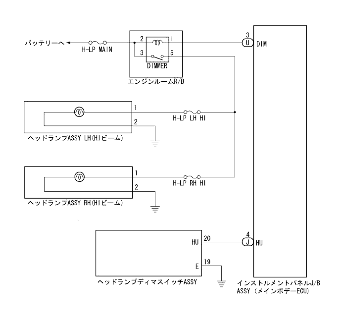
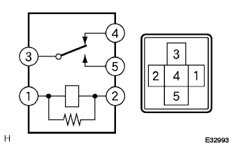
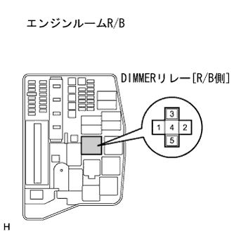
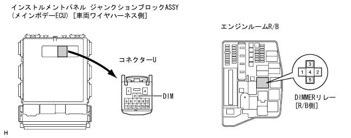
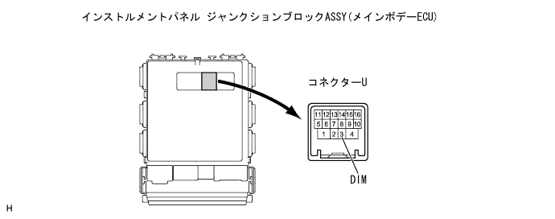
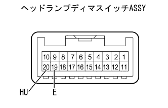
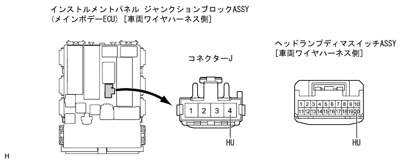
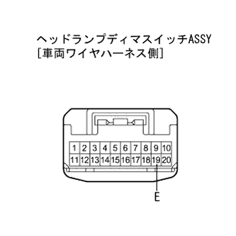

Lighting System Headlight (HI Beam) Does Not Come On |

.| Step 1 | Vehicle Check |
Check the vehicle specifications.
| Result | Proceed to |
|---|---|
| w/ Discharge Headlight | A |
| Models w/ halogen headlamps | B |
|
| ||||
| A | |
| Step 2 | Read TaSCAN Data |
Using SST (TaSCAN), follow the prompts on the screen to display the "ECU Data Monitor" screen and check the computer data.
| Item Name (Symbol) | Item Description/Display Range | Standard Value | Remarks |
|---|---|---|---|
| Dimmer Hi SW (HI) | Headlight dimmer switch (HI) status Display range: OFF - ON | OFF: Headlight dimmer switch OFF ON: Headlight dimmer switch HI | - |
|
| ||||
| OK | |
| Step 3 | Perform TaSCAN Active Test |
Using SST (TaSCAN), display the "Active Test" screen by following the screen instructions, and inspect the computer data.
| Item Name | Item Description | Reference Value |
|---|---|---|
| Headlight Hi Relay | Illuminate headlight Hi beam | OFF - ON |
Check the headlight illumination status.
| Result | Proceed to |
|---|---|
| Both headlights (Hi beam) do not illuminate | A |
| Headlights (Hi beam) illuminate normally | B |
| One headlight (Hi beam) does not illuminate | C |
|
| ||||
|
| ||||
| A | |
| Step 4 | Inspect DIMMER Relay |
Resistance Inspection
Remove the DIMMER relay from the engine room R/B.
 |
Using SST (Toyota electrical tester), measure the resistance between the terminals of the connector.
| Tester Connection | Condition | Standard |
|---|---|---|
| 3 - 4 | Always | Below 1 Ω |
| 3 - 5 | Always | 10 kΩ or higher |
| 3 - 4 | Battery voltage applied between terminals 1 and 2 | 10 kΩ or higher |
| 3 - 5 | Battery voltage applied between terminals 1 and 2 | Below 1 Ω |
|
| ||||
| OK | |
| Step 5 | Inspect Wire Harness and Connector (Fuse - DIMMER Relay) |
for reference. |
Using SST (Toyota electrical tester), measure the voltage between each terminal on the engine room R/B side and body ground.
| Tester Connection | Condition | Standard |
|---|---|---|
| 2 - Body ground | Always | 11 to 14 V |
| 3 - Body ground | Always | 11 to 14 V |
|
| ||||
| OK | |
| Step 6 | Inspect Wire Harness and Connector (DIMMER Relay - Instrument Panel Junction Block Assembly (Main Body ECU)) |
for reference.Disconnect connector U of the instrument panel junction block assembly (main body ECU).
Using SST (Toyota electrical tester), measure the resistance between the terminals of the vehicle side wire harness connectors.

| Inspection Terminals [Relay - Main Body ECU] | Condition | Standard |
|---|---|---|
| 1 - U3(DIM) | Always | Below 1 Ω |
Using SST (Toyota electrical tester), measure the resistance between each terminal of the vehicle side wire harness connector and body ground.
| Inspection Terminals [Relay - Body Ground] | Condition | Standard |
|---|---|---|
| 1 - Body ground | Always | 10 kΩ or higher |
|
| ||||
| OK | |
| Step 7 | Inspect Instrument Panel Junction Block Assembly |
for reference.Connect connector U of the instrument panel junction block assembly (main body ECU) and the DIMMER relay.
Using SST (Toyota electrical tester), measure the voltage between the terminal and body ground from the back side of the connector.

| Tester Connection (Terminal Symbol) | Condition | Standard |
|---|---|---|
| U3 (DIM) - Body ground | Headlight dimmer switch OFF → HI | 11 to 14 V → Below 1 V |
|
| ||||
| OK | ||
| ||
| Step 8 | Inspect Headlight Dimmer Switch Assembly |
Resistance Inspection
Disconnect the headlight dimmer switch assembly connector.
 |
Using SST (Toyota electrical tester), measure the resistance between the connector terminals.
| Tester Connection (Terminal Symbol) | Condition | Standard |
|---|---|---|
| 20(HU) - 19(E) | Headlight dimmer switch HI BEAM | Below 1 Ω |
|
| ||||
| OK | |
| Step 9 | Inspect Wire Harness and Connector (Headlight Dimmer Switch Assembly - Instrument Panel Junction Block Assembly (Main Body ECU)) |
for reference.Disconnect connector J of the instrument panel junction block assembly (main body ECU).
Using SST (Toyota electrical tester), measure the resistance between the terminals of the vehicle side wire harness connectors.

| Tester Connection (Terminal Symbol) | Condition | Standard |
|---|---|---|
| 20(HU) - J4(HU) | Always | Below 1 Ω |
Using SST (Toyota electrical tester), measure the resistance between each terminal of the vehicle side wire harness connector and body ground.
| Tester Connection (Terminal Symbol) | Condition | Standard |
|---|---|---|
| 20 (HU) - Body ground | Always | 10 kΩ or higher |
|
| ||||
| OK | |
| Step 10 | Inspect Wire Harness and Connector (Headlight Dimmer Switch Assembly - Body Ground) |
for reference. |
Using SST (Toyota electrical tester), measure the resistance between each terminal of the vehicle side wire harness connector and body ground.
| Tester Connection (Terminal Symbol) | Condition | Standard |
|---|---|---|
| 19 (E) - Body ground | Always | Below 1 Ω |
|
| ||||
| OK | ||
| ||